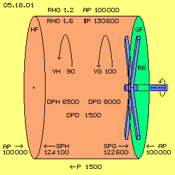
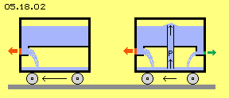
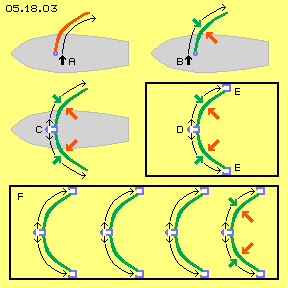
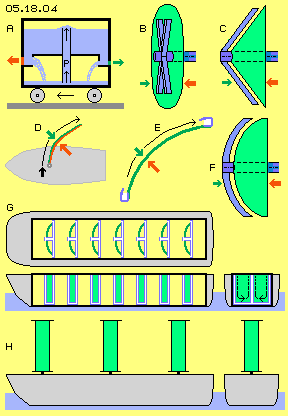
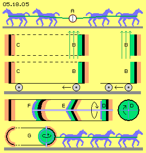

| Alfred Evert | 31.03.2016 |
05.18. Pro und Kontra Glockenmotor
Klares Prinzip

Außen um den Zylinder herrscht normaler atmosphärischer Druck AP = 100000 N/m^2 aufgrund einer Dichte Rho = 1.2 kg/m^3 (die exakte Berechnung des atmosphärischen Drucks ist in Kapitel ´05.13. Explosion / Implosion´ bei Bild 05.13.01 dargelegt). Innerhalb des Zylinders herrscht eine Dichte Rho = 1.6 kg/m^3 und damit ein statischer Druck von IP = 130600 N/m^2.
Der dynamische Strömungsdruck ergibt sich nach Formel DP = 0.5*rho*v^2. Entlang der Gleitfläche ist somit DPG = 0.5*1.6*100^2 = 8000 N/m^2. Entlang der Haftfläche ist DPH = 0.5*1.6*90^2 = 6500 N/m^2. Die Differenz ist DPD = 8000 - 6500 = 1.500 N/m^2.
Der statische Druck (ruhender Luft) auf die Seitenflächen ist reduziert um die jeweiligen dynamischen Druckanteile. Auf die Gleitfläche lastet von innen nurmehr der statische Druck SPG = 130600 - 8000 = 122600 N/m^2. Auf die Haftfläche verbleibt ein etwas höherer statischer Druck SPH = 130600 - 6500 = 124100 N/m^2. Auf beide Seitenflächen (von jeweils 1 m^2) lastet von außen der normale atmosphärische Druck AP = 100000 N/m^2, symmetrisch und damit kräfteneutral. Aufgrund der Druck-Differenzen an den seitlichen Innenflächen aber ergibt sich ein Schub von P = 1500 N, der den ganzen Zylinder nach links schiebt.
Diese Berechnungen basieren auf bekannten Formeln und Sachverhalten und sind insofern unstrittig. Es ist auch völlig klar, dass der Rotor nur geringen Antrieb erfordert, weil immer nur die gleiche Luft gleichförmig in Drehung zu halten ist. Der erforderliche Energie-Einsatz ist also wesentlich geringer als der nutzbare Vortrieb. Dennoch bleiben Vorbehalte, z.B. durch simple ´Rückwärts-Argumentation´: es kann nicht sein, was nicht sein darf. Ein konkreter Einwand könnte z.B. lauten: der unterschiedliche statische Innen-Druck auf die Seitenflächen wird durch Material-Spannung im Zylinder-Mantel aufgefangen, so dass keine Außen-Wirkung gegeben ist.
Vortrieb durch Rückstoß
Ein mit Wasser gefüllter Behälter kann auf dem Boden per Räder vorwärts rollen. Das Wasser kann durch eine Öffnung nach rechts abfließen. Dabei lastet der Wasserdruck (asymmetrisch, ohne Gegendruck) nur auf der rot markierten Fläche der Wand. Diese wird nach links gedrückt (siehe roter Pfeil) und damit kommt der Vortrieb zustande (wobei zunächst die gesamte Masse des Wassers und des Fahrzeugs zu beschleunigen ist).
In diesem Bild sind rechts zwei zusätzliche Elemente eingezeichnet, die allerdings nicht der Verbesserung der Effizienz dienen. Vielmehr soll damit dieses Modell vergleichbar sein zu den Merkmalen des Glockenmotors.

Wie beim Glockenmotor lasten auf den Seitenwänden (hier auf den roten und grünen Teilflächen) unterschiedliche Kräfte. Beide Komponenten bewirken oben angesprochene Spannung im Material des Fahrzeugs. Aber dennoch hat die Kräfte-Differenz externe Wirkung mit dem daraus resultierenden Vortrieb.
Mittig in diesem Fahrzeug ist ein vertikales Rohr eingezeichnet, durch welches eine Pumpe P das Wasser aus dem unteren Tank wieder hoch pumpt. Auch diese Maßnahme ist nicht sehr effektiv. Sie soll nur aufzeigen, dass die Anwendung des Rückstoß-Prinzips in einem komplett geschlossenen System möglich ist. Darin eingeschlossen ist auch der ´Motor´ zum fortwährenden Betrieb des Systems (hier die Pumpe, beim Glockenmotor der Rotor). In beiden Fällen ist das umgebende Medium ohne Belang (der äußere atmosphärische Druck ist kräfte-neutral). Die internen Kraft-Differenzen bewirken aber sehr wohl die externe Wirkung des Vortriebs der kompletten Einheit.
Vortrieb per Segeln
Der Glockenmotor wird beim Hubschrauber zum Auftrieb und zum Vortrieb eingesetzt. Für viele Leser mag das - auf den ersten Blick - so sinnvoll erscheinen, wie sich ´am eigenen Schopf aus dem Sumpf zu ziehen´. Oder es erinnert an die üblichen Hinweise an Segler, bei Flaute doch selber ins Segel zu blasen. Weniger bekannt ist, dass man durchaus per ´Blasen ins Segel´ einen Vortrieb erreichen kann. Bild 05.18.03 zeigt diese Möglichkeit.

Bei B wird die Luft entlang der Vorderseite des Segels geblasen. Der erforderliche Energie-Einsatz ist relativ gering, weil die konvexe Segelfläche einen Sogbereich bildet. Der statische Luftdruck (grüner Pfeil) ist reduziert, während an der Hinterseite der volle atmosphärische Luftdruck (roter Pfeil) ansteht. Aufgrund der Druckdifferenz ergibt sich Vortrieb. Die generierte Vortriebskraft ist stärker als die ursächliche Strömung, weil hierbei die ´frei verfügbare Energie´ des normalen atmosphärischen Drucks genutzt wird (und weshalb ein Segelboot auf Halbwind- und vorlichem Kurs schneller läuft, als der originäre Wind bläst).
Bei C wird dieser Effekt doppelt genutzt: es sind beidseits (Butterfly-) Segel gesetzt und die Luft wird aus dem hohlen Mast (weiß und blau) entlang der Vorderseite beider Segel geblasen (siehe Pfeile). Sobald Fahrtwind aufkommt, wird diese Luft sogar aus den Düsen heraus ´gesaugt´. Ein analoges Verfahren wird z.B. an Tragflächen eingesetzt zur Vermeidung der Eis-Bildung an den Vorderkanten, mit relativ geringem Energie-Bedarf für den Transport der Warmluft in konischen Rohren und Düsen.
Die Luftströmung muss an den Vorderseiten glatt anliegen, damit der statische Luftdruck minimiert wird. Umgekehrt liegt der volle atmosphärische Druck hinten am Segel nur an, wenn dort keine Turbulenzen statt finden. Völlig ruhende Luft wäre nur in einem Behälter gegeben.
Dazu ist bei D diese Anordnung in einem geschlossenen Behälter (schwarz) installiert. Wie zuvor wird die Luft mittig durch ein Rohr und Düsen (weiß und blau) entlang der konvexen Flächen geblasen. Zusätzlich wird bei E nun die Luft abgesaugt durch Schlitze in ein Rohr (weiß und blau). Durch eine Pumpe (hier nicht eingezeichnet) wird die Luft zurück geführt zum mittigen Rohr.
Rechts von den ´Segelflächen´ ist die Luft ruhend und übt normalen atmosphärischen Druck aus (rote Pfeile). Auch links im Behälter ist die Luft nahezu ruhend. Durch diesen relativ hohen statischen Druck wird die Strömung um die konvexe Flächen in den Absaug-Kanal gedrückt. Direkt links entlang der Flächen strömt die Luft und reduziert den statischen Andruck (grüne Pfeile). Damit wird der ganze Behälter nach links geschoben. Selbstverständlich kann in einem Behälter diese Anordnung mehrfach installiert werden, wie unten im Bild bei F skizziert ist.
Die vorige Technik zur Umwälzung von Luft ist keine optimale Lösung. Ungeachtet dessen aber belegen diese theoretischen Überlegungen eindeutig, dass Vortrieb auch mit einem geschlossenen System zu erreichen ist - so gewiss wie (theoretisch und praktisch) der Vortrieb per Segel erreicht wird.
Fazit

Besonders vorteilhaft ist es, die Wirkung des Soges zu nutzen. Die Luft folgt einer zurück weichenden Wand widerstandslos bis zur Schallgeschwindigkeit. Beim Glockenmotor in Form eines Kegels (C) wird das erreicht, weil im Drehsinn des Systems der Kegelmantel fortgesetzt einen Sogbereich darstellt. Die Rotorblätter ziehen die Luft immer nur entlang dieser konvexen Flächen, widerstandslos mit geringem Aufwand.
Auch beim Segeln ist der Wind-Druck zweitrangig. Die volle Kraft des Windes wird nur genutzt beim Ballon-Fahren oder beim Vorwindkurs eines Segelschiffs. Mehrfach schneller schiebt der normale atmosphärische Druck das Schiff durch das Wasser, wenn an der Vorderseite des Segels der Andruck reduziert wird. Die notwendige Strömung kann auch künstlich erzeugt werden (D), indem Luft vorn entlang des Segels geblasen wird.
Anstatt die Luft durch Düsen dort hinaus zu drücken, wäre es wiederum sehr viel effektiver, die Luft außen-hinten an der Segelfläche abzusaugen (E). Auch an der Oberseite einer Tragfläche wird die schnellste Strömung vorn an der konvexen Fläche durch die Sogwirkung hinten-oben an der Tragfläche erreicht. Hier würde entsprechend die Luft hinten-außen abgesaugt durch eine Sog-Pumpe und zurück gefördert zu den Auslass-Düsen. Im Freien würde der Fahrwind diese Luftbewegung unterstützen.
Dieses ´Segeln mit künstlichem Wind´ kann aber auch im geschlossenen System statt finden. In dem bei G skizzierten ´Segel-Schiff´ sind viele dieser Segelflächen eingezeichnet, wobei die Luft-Umwälzung (weiß) unten im Rumpf organisiert ist. Zweifelsfrei ist damit belegt, dass Luftbewegung in einem geschlossenen Behälter prinzipiell externe Wirkung haben kann.
Hier wird die Luft an gewölbten rechteckigen Flächen von einer Kante zur anderen gezogen. Die Förderung der Luft durch dieses Rohr-System wird aber nicht sehr strömungsgünstig sein. Beim glockenförmigen Glockenmotor (F) sind die Flächen in zwei Richtungen gewölbt. Die Luft wird um diese konvexe Fläche immer nur im Kreis herum geführt, so dass dieser Rücklauf nicht erforderlich ist. Es findet fortwährend nur eine gleichsinnige Rotation des Rotors und der Luft statt. Gegenüber den oben diskutierten Lösungen wird also der Glockenmotor in Kegelform und Glockenform sehr viel effektiver arbeiten.
Dieses Schiff mit Segeln im Rumpf (G) erinnert an ein Segelschiff, bei welchem anstelle der Segel rotierende Zylinder an Deck montiert waren (H). Diese ´Flettner-Zylinder´ waren extrem wirksam, ein großer Frachter fuhr z.B. 1926 mit einem Motor von nur 45 PS über den Atlantik. Aber die Zeit der Fracht-Segler war abgelaufen und diese Erfindung geriet in Vergessenheit. Wenn nun aber auch diese Technik in einem geschlossenen System anzuwenden wäre, ergäben sich völlig neue Möglichkeiten - siehe folgendes Kapitel zur ´Flettner-Box´.
Letzte Zweifel

Nach gleichem Prinzip wird der Druck einseitig reduziert an einer runden Fläche (D, grün), wenn dort die Luft mit einem ´Rührgerät´ (blau) in Drehung versetzt wird. Um den Luftwirbel von äußeren Einflüssen zu schützen, kann der runde Hohl-Zylinder auch geschlossen sein. Es ist vorteilhaft, die Luft entlang kegel- oder glockenförmiger Flächen (E und F) zu führen, wobei auch mehrere Einheiten nebeneinander installiert sein können. In jedem Fall lastet auf einer Seite der Zwischenwände reduzierter Luftdruck (grün) und auf der Gegenseite der (nahezu) volle Luftdruck (rot), welcher die gesamte Einrichtung nach links schiebt - immer noch genau nach obigem allgemein gültigen Prinzip.
Bei G sind die beiden Halbkugeln durch ein Rohr miteinander verbunden. Die linke Halbkugel ist kräfteneutral, es liegt beidseits normaler Luftdruck an (dort kann das Rohr auch Öffnungen aufweisen). In der rechten Halbkugel rotiert ein Rotor (blau), so dass darin die Luft zirkuliert (grün). Der volle Luftdruck drückt wiederum diese Einrichtung nach links - noch immer gemäß dem generell geltenden Prinzip.
Es ist nun die Frage, wie viele Pferdestärken notwendig wären, um diese rechte Halbkugel gegen den nur einseitig anliegenden, atmosphärischen Druck nach rechts zu ziehen. Die Kraft ist abhängig von der wirksamen Fläche, der Geschwindigkeit der internen Luftströmung, der Qualität der Oberflächen, dem Abstand zur anderen Kugelhälfte sowie der Dichte der Luft innerhalb und außerhalb eines hermetisch geschlossenen Behälters.
Damit dürfte endgültig klar sein, dass auch durch die Druckverhältnisse innerhalb eines Behälters externe Schubwirkung gegeben ist. Im nächsten Kapitel wird aufgezeigt, wie damit selbst schwere Schiffe durch das Wasser zu schieben sind.
Evert / 31.03.2016
In den vorigen Kapiteln wurde der ´Luftdruck-Glockenmotor´ in diversen Variationen beschrieben. Es wurde dargestellt, wie dieser neue Motor als autonome Einheiten zum Auftrieb und Vortrieb von Fluggeräten zu verwenden ist. Alle Überlegungen wurden logisch stringent abgeleitet und die Berechnungen basieren auf bekannten Formeln und Sachverhalten. Dennoch bleiben Unbehagen und Zweifel, ob dieses Verfahren wirklich tauglich ist. Den eindeutigen Nachweis können nur reale Prototypen bringen. Dazu fehlen mir die Mittel und ich kann das nicht leisten. Ich denke, dass auch rein theoretisch der Nachweis zu erbringen ist. Weil dieses Verfahren absolut neu ist, gibt es keine real existenten Beispiele. Dennoch will ich im Folgenden anhand bekannter Sachverhalte aufzeigen, dass die Kraftwirkungen dieser geschlossenen Systeme tatsächlich Außenwirkung haben. Zunächst sind in Bild 05.18.01 noch einmal das generelle Prinzip und Beispiel-Daten dargestellt.
Der gewöhnliche Vortrieb eines Fahrzeuges kommt zustande durch Abstützen an einem Medium (z.B. ein Auto an der Strasse, ein Raddampfer am Wasser) oder indem ein Medium nach hinten gefördert wird (z.B. per Propeller im Wasser oder in der Luft). Bei einer Rakete wird ebenfalls ein Medium nach hinten ausgestoßen, wobei Vortrieb auch im luftleeren Raum zustande kommt. Bei diesem Rückstoß ist das umgebende Medium ohne Bedeutung, so dass diese Technik auch in einem geschlossenen System wirksam sein müsste. Links in Bild 05.18.02 ist ein einfaches Modell zum bekannten Vortrieb per Rückstoß skizziert.
In diesem Beispiel herrscht vorn wie hinten gleicher (Wasser-) Druck, der auf unterschiedlich große Flächen wirkt. Umgekehrt sind die Flächen beim Glockenmotor vorn und hinten gleich groß, aber es lastet darauf unterschiedlich starker statischer Druck. Das folgende Beispiel soll diesen Merkmalen entsprechen.
In Bild 05.18.04 sind die Ergebnisse dieser Betrachtungen zum Pro und Kontra des Glockenmotor-Prinzips skizziert. Auf den ersten Blick scheint es unmöglich, dass Druckverhältnisse in einem geschlossenen System externe Wirkung haben könnten. Mit dem simplen Modell zum Rückstoß-Effekt (A) wurde nachgewiesen, dass dieser Wagen sehr wohl einen Vortrieb erfährt, obwohl der Wasserdruck nur innen auf die Wände unterschiedlich starke Kräfte ausübt. Allerdings ist diese (wie jede) Anwendung von Druck relativ ineffizient. Für einen kontinuierlichen Prozess muss hier z.B. das Wasser wieder aufwändig nach oben gepumpt werden.
Um letzte Zweifel auszuräumen, sind in Bild 05.18.05 simple Sachverhalte dargestellt. Die Menschen kannten schon immer die Kraft des Windes und fürchteten die Stürme. Aber erst 1656 wies Otto von Guericke in seinem berühmten Magdeburger Experiment nach, dass auch ruhende Luft enorme Kräfte bewirkt. Er pumpte Luft aus zwei hohlen Halbkugeln (A) und vier Pferde konnten diese nicht mehr voneinander lösen. Jeder Schüler kennt diese Geschichte. Den Zusammenhang zwischen Strömungsdruck und statischem Druck kann jeder Schüler leicht erkennen, wenn er über ein Blatt Papier hinweg bläst.
ap0518.pdf
ist eine Druck-Version dieses Kapitels.
Flettner-Box
Aero - Technologie